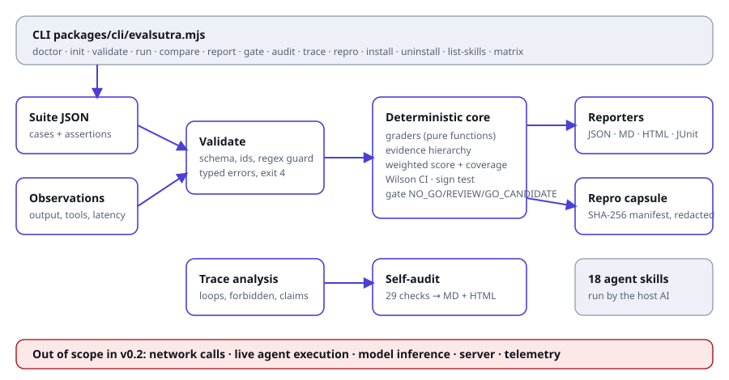

3. Architecture

Context (C4 level 1)
| Actor | Interaction |
|---|---|
| Developer or CI job | runs evalsutra with a suite and observations, reads reports and exit code |
| AI IDE (Claude Code, Cursor, Codex, Gemini CLI, Copilot) | loads installed SKILL.md files and uses its own AI to follow them |
| Target agent | not touched. It produces observations elsewhere |
| Filesystem | the only external system EvalSutra reads and writes |
There is no network, database, queue, server or model call.
Containers and components (C4 levels 2 and 3)
| Component | Path | Responsibility |
|---|---|---|
| CLI | packages/cli/evalsutra.mjs | argument parsing, exit codes, file I/O |
| Installer | packages/cli/install.mjs | skill copy, lock file, traversal and symlink guard |
| Evaluator | packages/core/evaluate.mjs | suite validation, assertions, scoring, gate, comparison |
| Statistics | packages/core/stats.mjs | Wilson interval, pass@k |
| Security helpers | packages/core/security.mjs | secret redaction, stable JSON, SHA-256 digests |
| Trace analyser | packages/core/trace.mjs | tool trace findings |
| Repro capsule | packages/core/capsule.mjs | export and verify |
| Reporters | packages/reporters/ | HTML, JUnit; theme.mjs is the shared design system |
| Self-audit | packages/audit/audit.mjs | 29 checks, MD and HTML audit report |
| Skills | .agents/skills/, skills/ | 18 instruction files, canonical and plugin copy |
| Doc and evidence builders | scripts/build-docs.mjs, scripts/build-evidence.mjs | this documentation and its proof |
Data flow
- CLI reads suite and observations (
readJson, errors become exit code 1 or 4). validateSuiterejects bad ids, unknown assertion types, unsafe regex, bad weights, bad thresholds.- For each case and assertion, a pure function returns
{status, reason, detail}. No assertion can run code from the fixture. - Weak evidence sources downgrade passes to inconclusive.
- Weights give pass rate and coverage; counts give the gate.
- Digests of suite and observations, tool and Node versions go into
provenance. - Reporters render JSON, Markdown, HTML, JUnit.
compare,gate,reproandauditconsume the JSON report.
Key design decisions (ADRs)
| ID | Decision | Reason | Trade-off |
|---|---|---|---|
| ADR-1 | Plain JavaScript ES modules, no build step | npx and clone both run immediately; nothing to compile or break | no static types; covered by tests instead |
| ADR-2 | Zero dependencies | no supply-chain risk, tiny audit surface | some code (Markdown converter, Wilson) written in-house |
| ADR-3 | Missing evidence is inconclusive | prevents score inflation | more REVIEW results until evidence is complete |
| ADR-4 | Model judges cannot prove a pass | judge output is an opinion | LLM-graded rubrics cannot gate alone |
| ADR-5 | Replay runner only | live execution needs sandbox and consent design | users must record observations elsewhere |
| ADR-6 | Regex is length-capped and screened, not RE2 | no native dependency | heuristic; upgrade if untrusted suites become common (marked shortcut: in code) |
| ADR-7 | Capsule is hashed, not signed | signing needs key management | detects accidents, not forgers |
| ADR-8 | Reports contain no script | safe to open anywhere | no interactive charts yet |
Failure modes
| Failure | Behaviour |
|---|---|
| Unreadable or invalid JSON | exit 1 with the file path and parser message |
| Invalid suite | exit 4 listing every error |
| Missing observation or field | inconclusive with reason code |
| Unsafe regex | error status, never executed |
| Output folder not writable | exit 1 |
| Install target outside project | refused, exit 1 |
| Modified skill at uninstall | kept and reported |
Extension points
Add an assertion type in evaluate.mjs (validate, evaluate, test, audit row). Add a reporter in packages/reporters/. Add a skill folder under .agents/skills/ and run the sync (see Contributor handbook). Planned adapters (OpenTelemetry, Promptfoo, Inspect AI, Harbor, MCP Inspector) are described in Roadmap and status and are not implemented.
Deployment topology
A single Node process on the user's machine or CI runner. Distribution: npm (npx evalsutra) and GitHub source (npx github:shahvatsalofficial/evalsutra). Nothing is hosted.
Observability
Output is the report. Exit codes are the machine interface. There is no telemetry.